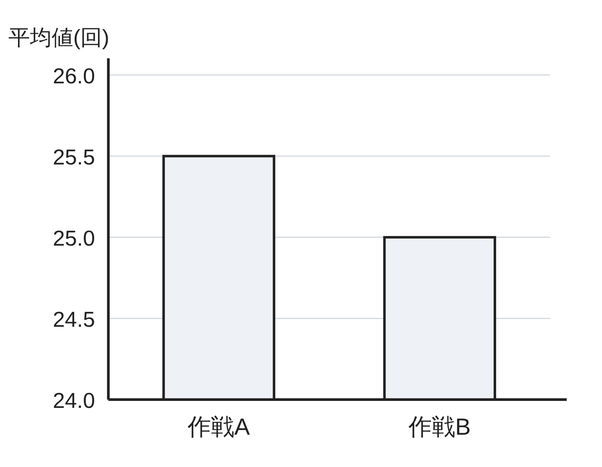

ペア学習
第7時 データを根拠にして判断し、「本当にそういえるか」を確かめよう
第6時の重要語句から、1人1問ずつ、言葉を選んで出題する。
聞かれた人は、その言葉の意味を、自分の言葉で言う。
問題
計画
整理
結論
代表値
範囲
データの活用 第7時 データを根拠にして判断し、「本当にそういえるか」を確かめよう
めあて
第7時 データを根拠にして判断し、「本当にそういえるか」を確かめよう
学習課題
前の時間に整理した、作戦A・Bの結果（下の表）をもとに、
本番でどちらの作戦を選ぶか決めよう。本番は 1回だけ。次のア・イの場合、それぞれ、どちらを選ぶか。根拠となる数をあげて、説明しよう。
ア 30回以上跳べば、入賞できる。 イ 20回未満だと、予選で落ちる。
| 階級（回） | 0以上 10未満 | 10以上 20未満 | 20以上 30未満 | 30以上 40未満 | 40以上 50未満 | 50以上 60未満 | 計 |
|---|---|---|---|---|---|---|---|
| 作戦Aの度数 | 2 | 5 | 6 | 4 | 2 | 1 | 20 |
| 作戦Bの度数 | 0 | 2 | 15 | 3 | 0 | 0 | 20 |
データの活用 第7時 データを根拠にして判断し、「本当にそういえるか」を確かめよう
学習課題のまとめ
第7時 データを根拠にして判断し、「本当にそういえるか」を確かめよう
ア・イの場合、それぞれ、どちらの作戦を選ぶか。根拠となる数は？
ア … 30回以上の割合を調べる。
作戦A 7÷20＝0.35 作戦B 3÷20＝0.15 → 作戦A
イ … 20回未満の割合を調べる。
作戦A 2+5＝7（回） 7÷20＝0.35
作戦B 0+2＝2（回） 2÷20＝0.10 → 作戦B
気づき：ア・イで、選ぶ作戦は同じか。
ちがう。目的がちがうと、見る数も、選ぶ作戦も変わる。
データの活用 第7時 データを根拠にして判断し、「本当にそういえるか」を確かめよう
ことば
第7時 データを根拠にして判断し、「本当にそういえるか」を確かめよう
判断の理由になる数や事実を という。
判断の がちがえば、見る数も、結論も、ちがってよい。
データの値の広がりぐあいを という。
範囲やヒストグラムでとらえる。
人数のちがう集団をくらべるときは、
（割合）を使う。
データの活用 第7時 データを根拠にして判断し、「本当にそういえるか」を確かめよう
ことば
第7時 データを根拠にして判断し、「本当にそういえるか」を確かめよう
判断の理由になる数や事実を 根拠 という。
判断の 目的 がちがえば、見る数も、結論も、ちがってよい。
データの値の広がりぐあいを ちらばり という。
範囲やヒストグラムでとらえる。
人数のちがう集団をくらべるときは、
相対度数（割合）を使う。
データの活用 第7時 データを根拠にして判断し、「本当にそういえるか」を確かめよう
例題
第7時 データを根拠にして判断し、「本当にそういえるか」を確かめよう
「作戦Aは、平均値が 回で、作戦Bの 回より大きい。
だから、作戦Aのほうがすぐれている。」という意見がある。
この意見について、データをもとに、自分の考えを書こう。
（前の時間の表）
| 階級（回） | 0以上 10未満 | 10以上 20未満 | 20以上 30未満 | 30以上 40未満 | 40以上 50未満 | 50以上 60未満 | 計 |
|---|---|---|---|---|---|---|---|
| 作戦Aの度数 | 2 | 5 | 6 | 4 | 2 | 1 | 20 |
| 作戦Bの度数 | 0 | 2 | 15 | 3 | 0 | 0 | 20 |
データの活用 第7時 データを根拠にして判断し、「本当にそういえるか」を確かめよう
例題 解答
第7時 データを根拠にして判断し、「本当にそういえるか」を確かめよう
「作戦Aは、平均値が 25.5 回で、作戦Bの 25.0 回より大きい。
だから、作戦Aのほうがすぐれている。」
（例）この意見についての、自分の考え
平均値の差は 25.5−25.0＝0.5（回）だけ。
範囲は、作戦A 47回、作戦B 17回。Aは、ちらばりが大きい。
20回未満の割合は、A 0.35、B 0.10。
「すぐれている」かどうかは、何を大事にするかで変わる。
平均値のわずかな差だけでは、決められない。
データの活用 第7時 データを根拠にして判断し、「本当にそういえるか」を確かめよう
考えよう
第7時 データを根拠にして判断し、「本当にそういえるか」を確かめよう
①
「作戦Aは、作戦Bよりずっとすぐれている。
Aの棒は、Bの棒の 1.5倍の高さだ。」
（右のグラフは、2つの作戦の平均値）
②
1年1組の 10人に、「体育祭で、大なわとびを
やりたいか」と聞いたら、9人が「やりたい」と
答えた。だから、「全校生徒の 90%が、
大なわとびをやりたい」といえる。

③
データを使った説明を読むときに、気をつけることを、3つ以上書こう。
データの活用 第7時 データを根拠にして判断し、「本当にそういえるか」を確かめよう
振り返り
第7時 データを根拠にして判断し、「本当にそういえるか」を確かめよう
今日のめあて
根拠
目的
ちらばり
相対度数
代表値
今日わかったことを、ペアで1つずつ言い合おう。
ワークシートと演習プリントを出そう。（未完成でも出す）
データの活用 第7時 データを根拠にして判断し、「本当にそういえるか」を確かめよう